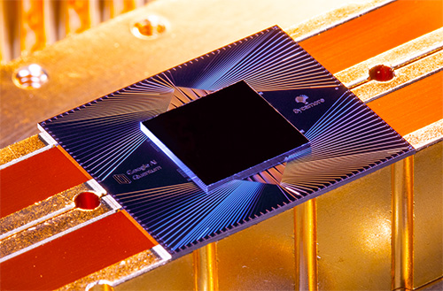

The following collection of web pages will briefly describe what Quantum Computing is, its potential practical and business applications, and also its current limitations for real-world use.
Use the buttons in the menu above to explore further.